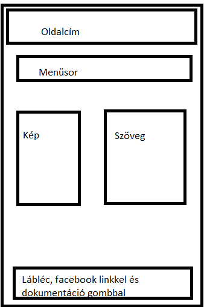
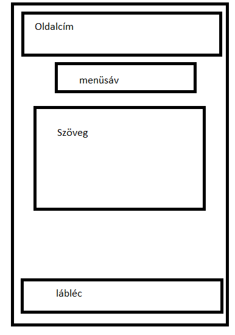
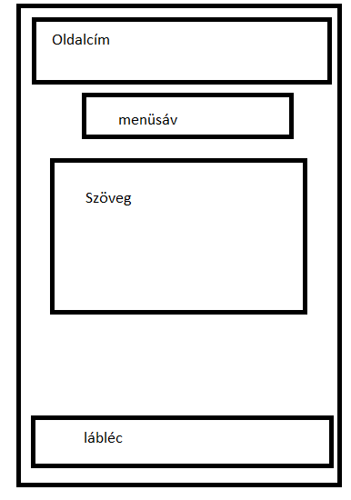

Dokumentáció:
Kezdéskor nagyon nehéz dolgom volt, mert egyszerűen nem tudtam eldönteni, hogy milyen weboldalt is akarok készíteni, legfőként a színek kiválasztása okozott fejfájást. Több oldal és videó megtekintése után, egy egyszerű, könnyen átlátható és nem túl bonyolult elrendezésű oldal megírása mellett döntöttem.
Úgy terveztem, és így is próbáltam meg kivitelezni, hogy felül lesz egy címsor, alatta a menüsávval. Középen két részre oszotom a rendelkezésre álló területet, balra a képek kerülnek, jobbra pedig a szövegek. Alulra pedig egy lábléc kerül. Ezt az elrendezéset tartottam is minden fülön, több kevesbb sikerrel.

 

A tervtől nem nagyon tértem el, pont azért válaszottam ezt az elrendezést, hogy ne legyen programozás közben probléma.
Ennek ellenére, akadtak nehézségeim. Legnagyobb problémám a margin és a padding parancsokkal voltak. Továbbá a lábléc rögzítése a lap aljára se volt probléma mentes. Sokszor szétesett miatta a weboldal és nem kevés idő telt el a gond okának megtalálásával.